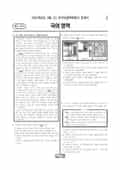

문제지

시험지 만들기준비하고 있어요. 열리면 아래 탭에서 바로 쓸 수 있어요.
전국연합학력평가 · 시·도교육청 주관
2022년 9월 고1 학력평가 국어 1등급컷은 원점수 82점(추정), 표준점수 최고점은 155점입니다.
원점수 1등급컷은 공식 발표값이 아니라 EBSi·입시기관 값입니다. 등급별 값은 등급컷 표, 출처 구분은 데이터 원칙에 있습니다.

| 등급 | 표준점수 이상 | 인원(명) | 비율 |
|---|---|---|---|
| 1 | 136 | 10,128 | 4.17% |
| 2 | 126 | 17,427 | 7.18% |
| 3 | 116 | 31,084 | 12.8% |
| 4 | 105 | 41,104 | 16.93% |
| 5 | 94 | 48,765 | 20.09% |
| 6 | 83 | 40,050 | 16.5% |
| 7 | 74 | 29,862 | 12.3% |
| 8 | 68 | 14,929 | 6.15% |
| 9 | 50 | 9,443 | 3.89% |
시·도교육청 공개 자료
출처: 시·도교육청이 공개한 전국연합학력평가 성적 분석·통계자료(공개 자료 보기).
발행 기관: 시·도교육청(전국연합학력평가). 파일 위치: 이 사이트가 보관한 사본. 저작권은 발행 기관에 있습니다. 원본과 다르거나 게시 중단이 필요하면 연락처로 알려 주세요. 등급컷 출처 구분은 데이터 원칙에서 설명합니다.
막대 색은 역대 대비 난이도 · 진한 막대가 이 시험 · 막대를 누르면 그 회차로 이동
| 회차 | 1등급컷 | 표점 최고 | 1등급 표점 | 난이도 |
|---|---|---|---|---|
| 9월 학평2022년 고1이 시험 | 82 | 155 | 136 | 매우 어려움 |
| 6월 학평2022년 고1 | 91 | 142 | 134 | 쉬움 |
| 3월 학평2022년 고1 | 76 | 164 | 136 | 매우 어려움 |
| 11월 학평2021년 고1 | 88 | 146 | 134 | 쉬움 |
| 6월 학평2021년 고1 | 92 | 140 | 133 | 매우 쉬움 |
| 3월 학평2021년 고1 | 80 | 160 | 135 | 어려움 |
국어는 교육청 채점 결과 1등급 구분 표준점수가 136점, 최고점이 155점(47명)이었습니다. 6월(1등급 134점, 최고점 142점, 1,320명)보다 최고점이 13점 높아 최상위권 변별이 컸습니다.
16~21번은 저작권법 제2조가 정의한 저작물, 곧 인간의 사상이나 감정을 표현한 창작물이 보호받기 위한 창작성 요건(가)과, 저작권을 양도할 수 없는 저작인격권과 저작재산권으로 나눈 (나)를 엮은 지문이었습니다. 22~25번은 과학기술이 가져온 풍요 속에서 현대인이 과연 행복한지를 물은 에리히 프롬의 행복론, 30~34번은 겨울에 입구를 열어 내부를 냉각한 뒤 얼음을 저장해 낮은 온도를 오래 유지하는 석빙고의 구조를 다뤘습니다.
문법은 '시간은 모든 것을 변화시킨다'는 소쉬르의 말로 시작하는 언어의 역사성을 다뤘습니다.
문학은 정철 「훈민가」와 장영희의 수필 「괜찮아」(26~29번), 명절 상품권을 구두 많이 닳은 사람부터 나눠 주는 만수 씨를 그린 성석제 「투명 인간」(35~38번), 천상에서 지은 죄로 인간 세상에서 고초를 겪는 「숙향전」(39~42번), 이육사 「광야」와 박용래 「울타리 밖」(43~45번)이었습니다.
화법·작문은 눈꼽재기창·벼락닫이창 같은 한옥 창을 소개한 발표(1~3번), 체육대회 운영에 관한 건의와 학생회 회의(4~7번), 나트륨 섭취 줄이기를 다룬 학교 신문 글(8~10번)이었습니다.